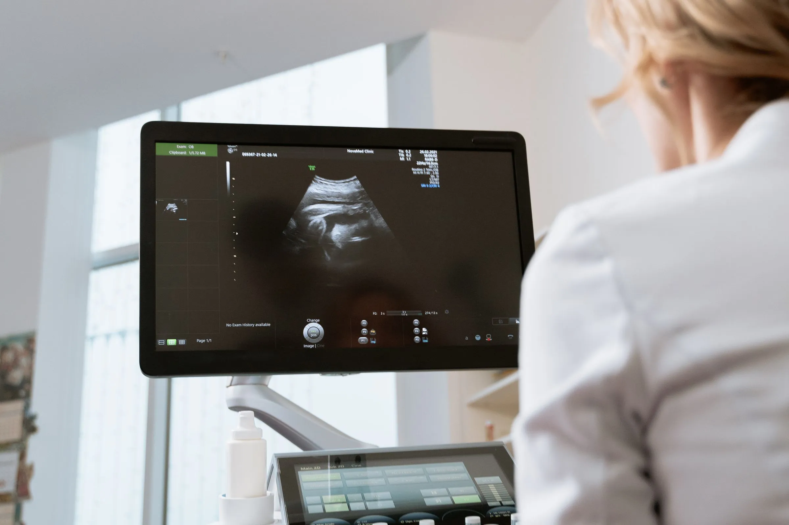

Ginekolog i położnik
Dr Janusz Maziuk, specjalista ginekologii i położnictwa. Prowadzenie ciąży od poczęcia do urodzenia, USG, cytologia i badania genetyczne.
Zadzwoń: 605 438 002Przyjęcia: pon. 16-18, wt. 17-19, czw. 16-18 · ul. Mickiewicza 6
Dr Janusz Maziuk
Absolwent Wojskowej Akademii Medycznej w Łodzi, specjalista ginekologii i położnictwa. Indywidualna Specjalistyczna Praktyka Lekarska w zakresie ginekologii, 25 lat doświadczenia.
- Wojskowa Akademia Medyczna w Łodziabsolwent, specjalista ginekologii i położnictwa
- Ordynator Ginekologii i PołożnictwaNZOZ Szpital im. prof. Religi w Słubicach, przez pięć lat
- Ordynator Ginekologii i PołożnictwaEMC Instytut Medyczny, Szpital św. Jerzego w Kamieniu Pomorskim, przez trzy lata
- Szef Służby Zdrowia UNDOFsiły pokojowe ONZ, Wzgórza Golan, przez rok
- Ginekolog Rokuplebiscyt Lubuski Hipokrates 2018; Laur Pacjenta 2014 i 2015/16
Zakres badań
Ginekologia
- Cytologia w systemie Bethesda, także na podłożu płynnym
- Testy HPV i molekularno-genetyczne
- Antykoncepcja i hormonalna terapia zastępcza
Położnictwo
- Prowadzenie ciąży od poczęcia do urodzenia
- Poronienie zagrażające i poronienia nawykowe
- Zagrażający poród przedwczesny
USG
- USG między 11 a 14 tygodniem ciąży
- Anatomia płodu między 18 a 24 tygodniem
- Badania dopplerowskie
Badania genetyczne
- Niepowodzenia rozrodu: kariotyp, trombofilia
- Onkologia: panele BRCA1 i BRCA2
- Pary planujące ciążę
Szybka diagnostyka w gabinecie
- Screening w kierunku GBS
- Przedwczesne pęknięcie błon płodowych
- Wczesna diagnostyka ciąży, CRP
Ciąża od poczęcia do urodzenia
Kompleksowe badania i pełna dostępność opieki lekarskiej w czasie trwania ciąży.
- Poczęcienowoczesne prowadzenie ciąży od pierwszej wizyty
- 11-14 tydzieńbadanie ultrasonograficzne
- 15-18 tydzieńUSG szyjki macicy
- 18-24 tydzieńpełna diagnostyka rozwoju i anatomii płodu
- Do poroduocena krążenia maciczno-płodowego w badaniu dopplerowskim, KTG
Także prowadzenie poronienia zagrażającego i poronień nawykowych oraz diagnostyka i leczenie zagrażającego porodu przedwczesnego.
Położnictwo: pełny zakresCennik
Pełny cennikGinekologia
Położnictwo
Opinie pacjentek
wspaniały lekarz! Odkąd został ordynatorem na słubickiej ginekologii nie mam wątpliwości, ze własnie w tym szpitalu chcę rodzić swoje dziecko! Profesjonalne podejście, zawsze pełen optymizmu, wspaniały lekarz! Panie Doktorze mam nadzieję, że zostanie Pan u nas do samej emerytury!
potwierdzam bardzo dobry lekarz oby wiecej takich. ja rodziłam w 2011 pan doktor nadzorował mój poród czesto do mnie zachodził konkretny sympatyczny człowiek
bardzo dobry sympatyczny delikatny podczas badania wyrozumialy polecam wszystkim kobietom ciezarnym i nie tylko moja ciaze od pocztku do konca prowadzil
Dr Maziuk doskonały lekarz... Prowadzi już moja 3 ciąże i naprawdę ma cierpliwość odpowie na każdą wiadomość którą napisze na wizycie również dokładnie wytłumaczy i doradzi.... Polecam z całego serca
Wyróżnienia i certyfikaty
Ginekolog Roku, Laur Pacjenta oraz kongresy i kursy: USG, uroginekologia, laparoskopia.
Artykuły
Wszystkie artykułyNiepłodność małżeńska
Niepłodność oznacza niemożność zajścia w ciąże.
Torbiel jajnika
Torbiel jajnika jest jedną z częstszych zmian opisywanych w ginekologii.
Mięśniak macicy
Mięśniaki macicy to nowotwory łagodne wywodzące się z włókien mięśniowych macicy. Są chorobą dotyczącą około 25 procent kobiet w różnym wieku, rozpoznaje się podczas badania ginekologicznego, a obecnie coraz częściej podczas badania USG.
Nadżerka szyjki macicy
Nadżerka szyjki macicy to błona śluzowa kanału szyjki macicy, która jest przemieszczona na tarczę części pochwowej szyjki macicy, jest jedną z najczęściej rozpoznawalnych zmian u kobiet.
Endometrioza
Endometrioza jest chorobą polegającą na występowaniu komórek endometrium / błony śluzowej/ poza jamą macicy.
Cytologia
Cytologia stosowana jest w profilaktyce nowotworowej, pozwala na wykrycie wczesnej postaci raka szyjki macicy i stanów przedrakowych, z których może rozwinąć się nowotwór.
Kontakt i dojazd
- Adres
- ul. Mickiewicza 6, 69-100 Słubice
- Telefon
- +48 605 438 002
- j.maziuk@op.pl
- facebook.com/j.maziuk
Godziny przyjęć
| Poniedziałek | 16.00 - 18.00 |
| Wtorek | 17.00 - 19.00 |
| Czwartek | 16.00 - 18.00 |